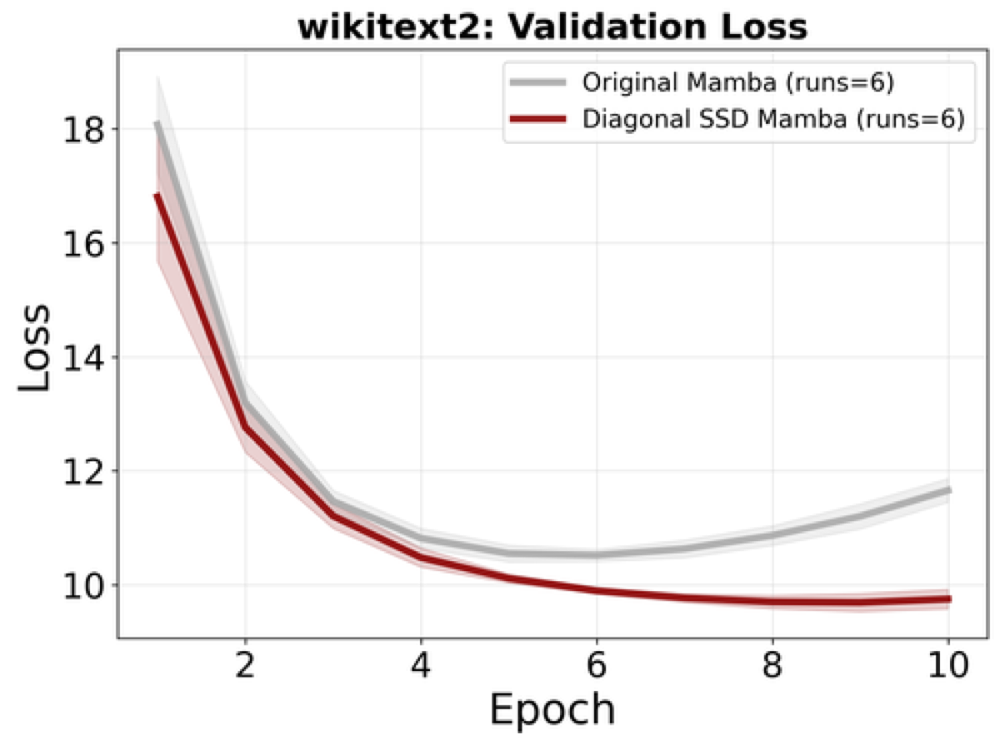

Why it matters왜 중요한가
The duality is what lets one model be a fast RNN at inference and a parallel attention at training. Widening it = more expressive models for free.
이 쌍대성 덕분에 한 모델이 추론에선 빠른 RNN, 학습에선 병렬 어텐션이 된다. 그 범위를 넓힌다는 건 = 더 표현력 큰 모델을 공짜로 얻는다는 것.
SSD is the theoretical engine behind Mamba-2: it proves a recurrent SSM and a masked-attention layer compute the identical function, so you train with the parallel O(T²) form and deploy with the linear O(T) form. But the original result only covers a single scalar decay per layer. This paper extends it to general diagonal state matrices — meaning N independent decay rates, so a layer can mix fast and slow timescales at once — and proves three structural facts: the diagonal model keeps the same O(TN) optimal training cost, the semiseparable rank of its attention kernel equals the number of distinct decay modes, and the whole duality breaks for softmax attention. The last point is a clean theoretical boundary: it explains why linear/SSM models and softmax Transformers are genuinely different beasts, not just two views of one thing.
SSD는 Mamba-2의 이론적 엔진이다 — 순환 SSM과 마스크 어텐션 레이어가 완전히 동일한 함수를 계산함을 증명해, 학습은 병렬 O(T²)로 하고 배포는 선형 O(T)로 한다. 그러나 원조 결과는 레이어당 단일 스칼라 감쇠만 다룬다. 이 논문은 이를 일반 대각 상태행렬로 확장한다 — N개의 독립적 감쇠율, 즉 한 레이어가 빠른·느린 시간척도를 동시에 섞을 수 있다. 그리고 세 가지 구조적 사실을 증명한다: 대각 모델도 같은 O(TN) 최적 학습 비용을 유지하고, 유도된 어텐션 커널의 준분리 랭크는 서로 다른 감쇠 모드의 수와 같으며, 쌍대성 전체가 softmax 어텐션에서는 깨진다. 마지막은 깔끔한 이론적 경계다 — 선형/SSM 모델과 softmax 트랜스포머가 한 사물의 두 시각이 아니라 본질적으로 다른 존재임을 설명한다.

By the numbers핵심 숫자
(1000 seeds, float64)최대 절대오차: 스칼라 SSM ≡ 1-SS 어텐션
(시드 1000, float64)
= scalar lower bound대각 SSD 학습 비용
= 스칼라의 하한
(T up to 9,600, measured)순환 vs 어텐션 런타임
(T 최대 9,600, 실측)
(WikiText-2, 6 seeds)최저 검증 손실: SSD-Mamba vs Mamba
(WikiText-2, 6 시드)
(next-token)최고 검증 정확도: SSD-Mamba vs Mamba
(다음 토큰)
at T ≈ 5,000 (i.e. ~full rank)softmax 랭크 갭 T−rank(A)
T ≈ 5,000에서 (≈ full rank)
Results — rank tracks distinct decays, not state dim결과 — 랭크는 상태차원이 아니라 '서로 다른 감쇠 수'를 따라간다
| Decays λ감쇠 λ | N | Generator rank생성자 랭크 | Matrix rank(M)행렬 랭크(M) |
|---|---|---|---|
| (0.9) | 1 | 1 | 1 |
| (0.5, 0.8) | 2 | 2 | 2 |
| (0.7, 0.7) | 2 | 1 | 1 |
| (0.4, 0.6, 0.9) | 3 | 3 | 3 |
In one diagram한 장의 그림
Idea: generalize the bridge, then find its edge아이디어: 다리를 일반화하고, 그 끝을 찾는다
Diagonal SSM ≡ Σ of 1-SS heads
Unrolling a diagonal SSM with A=diag(λ₁..λ_N) shows its output is exactly a sum of N one-semiseparable masked-attention heads, each with its own geometric-decay mask λₙ^(t−s). This extends SSD from a single exponential to N separate timescales — and the induced kernel's semiseparable rank equals the number of distinct decays (Theorem 4.1), still trainable in optimal O(TN) time.
A=diag(λ₁..λ_N)인 대각 SSM을 펼치면, 그 출력이 정확히 N개의 1-준분리 마스크 어텐션 헤드의 합임이 드러난다(각 헤드는 자신만의 기하감쇠 마스크 λₙ^(t−s)). SSD를 단일 지수에서 N개의 서로 다른 시간척도로 확장하며, 유도된 커널의 준분리 랭크는 서로 다른 감쇠 수와 같다(정리 4.1). 여전히 최적 O(TN) 시간에 학습 가능.
Softmax → rank explosion
For a duality to hold, the attention matrix must have bounded semiseparable rank (= small state dimension). The authors prove (and verify numerically) that a causal softmax kernel from generic Q,K is effectively full rank: the gap T−rank(A) is only ~10² even at T≈5,000. So softmax attention has no fixed low-dimensional SSM dual — the bridge genuinely ends before standard Transformers.
쌍대성이 성립하려면 어텐션 행렬이 유계 준분리 랭크(=작은 상태차원)를 가져야 한다. 저자들은 일반 Q,K에서 나온 인과 softmax 커널이 사실상 full rank임을 증명·수치검증한다 — 갭 T−rank(A)가 T≈5,000에서도 ~10²에 불과. 따라서 softmax 어텐션엔 고정 저차원 SSM 쌍대가 없으며, 다리는 표준 트랜스포머 앞에서 실제로 끝난다.
How it works어떻게 작동하나
- Unroll the recurrence순환식 펼치기Write the closed-form SSM output yₜ = Σ_{s≤t} cₜᵀ Aₜ⋯A_{s+1} bₛ xₛ as an explicit T×T attention matrix M with a 1-semiseparable causal mask — the same function, two algorithms.SSM 닫힌 해 yₜ = Σ_{s≤t} cₜᵀ Aₜ⋯A_{s+1} bₛ xₛ를 1-준분리 인과 마스크를 가진 명시적 T×T 어텐션 행렬 M으로 쓴다 — 같은 함수, 두 알고리즘.
- Diagonalize AA를 대각화Set A = diag(λ₁..λ_N). Each diagonal entry becomes an independent geometric-decay head; the SSM output is their weighted sum (Σ cₙbₙ λₙ^{t−s}).A = diag(λ₁..λ_N)로 둔다. 각 대각 성분은 독립적인 기하감쇠 헤드가 되고, SSM 출력은 그것들의 가중합(Σ cₙbₙ λₙ^{t−s}).
- Prove rank = #distinct decays랭크 = 서로 다른 감쇠 수 증명Via a Vandermonde generator matrix, show the kernel's semiseparable rank equals the count of distinct λₙ, ≤ N (duplicates collapse). This gives the necessary-and-sufficient condition for an N-SS matrix to have a 1-SS dual.반데르몽드 생성자 행렬을 통해, 커널의 준분리 랭크가 서로 다른 λₙ 개수(≤N, 중복은 합쳐짐)와 같음을 보인다. 이것이 N-SS 행렬이 1-SS 쌍대를 가질 필요충분조건.
- Test the softmax boundarysoftmax 경계 시험Build causal softmax kernels for T up to 5,120 and measure numerical rank — it stays ~full, proving no bounded-state SSM dual exists. Plus a synthetic mixture-of-decays + WikiText-2 sanity check that diagonal beats scalar.T 최대 5,120까지 인과 softmax 커널을 만들어 수치 랭크를 측정 — 거의 full로 유지되어, 유계 상태 SSM 쌍대가 없음을 증명. 더해 합성 혼합감쇠 + WikiText-2로 대각이 스칼라를 능가함을 확인.
What to take away그래서, 가져갈 것
Richer dynamics, same cost. Diagonal SSMs give N independent timescales (fast + slow at once) yet still train at the scalar model's optimal O(TN) — expressiveness with no asymptotic penalty.
더 풍부한 동역학, 같은 비용. 대각 SSM은 N개의 독립 시간척도(빠름+느림 동시)를 주면서도 스칼라 모델의 최적 O(TN)로 학습된다 — 점근적 손해 없는 표현력.
Rank ≠ state dimension. What matters is the count of distinct decays — duplicated modes are wasted parameters. A practical lens for designing/pruning SSM state.
랭크 ≠ 상태차원. 중요한 건 서로 다른 감쇠의 수 — 중복 모드는 낭비된 파라미터. SSM 상태를 설계·가지치기하는 실용적 관점.
The bridge has an edge. Softmax attention provably has no bounded-state SSM dual (rank explosion) — a clean reason linear/SSM models and Transformers are not interchangeable.
다리엔 끝이 있다. Softmax 어텐션은 유계 상태 SSM 쌍대를 갖지 못함이 증명됨(랭크 폭발) — 선형/SSM 모델과 트랜스포머가 호환 불가인 분명한 이유.
Self-contained theory toolkit. The strictly-causal N-SS ⇔ N-SSS proof is reusable for downstream duality results in hybrid attention-SSM architectures.
독립적인 이론 도구상자. 엄밀 인과 N-SS ⇔ N-SSS 증명은 attention-SSM 하이브리드 구조의 후속 쌍대성 결과에 재사용 가능.